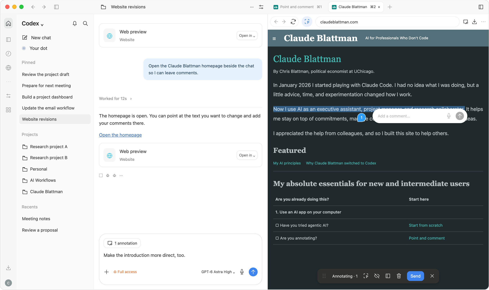
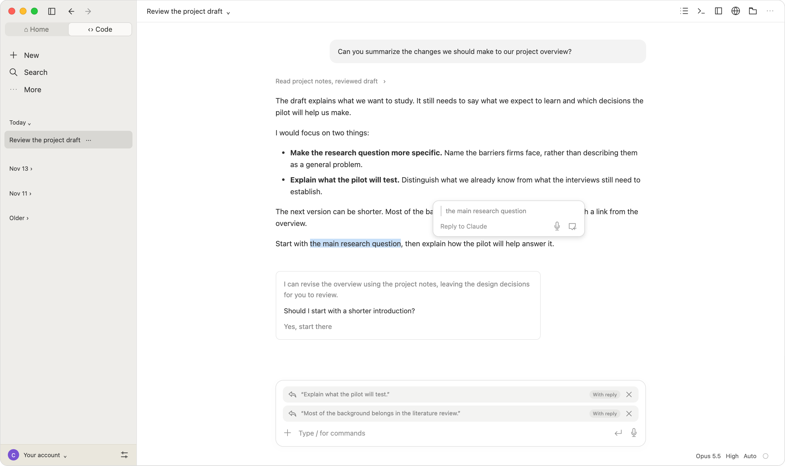
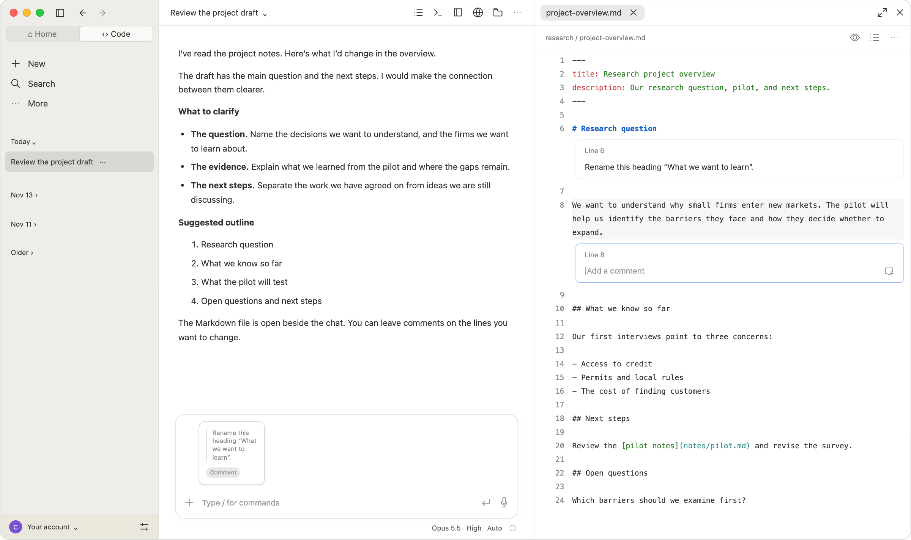
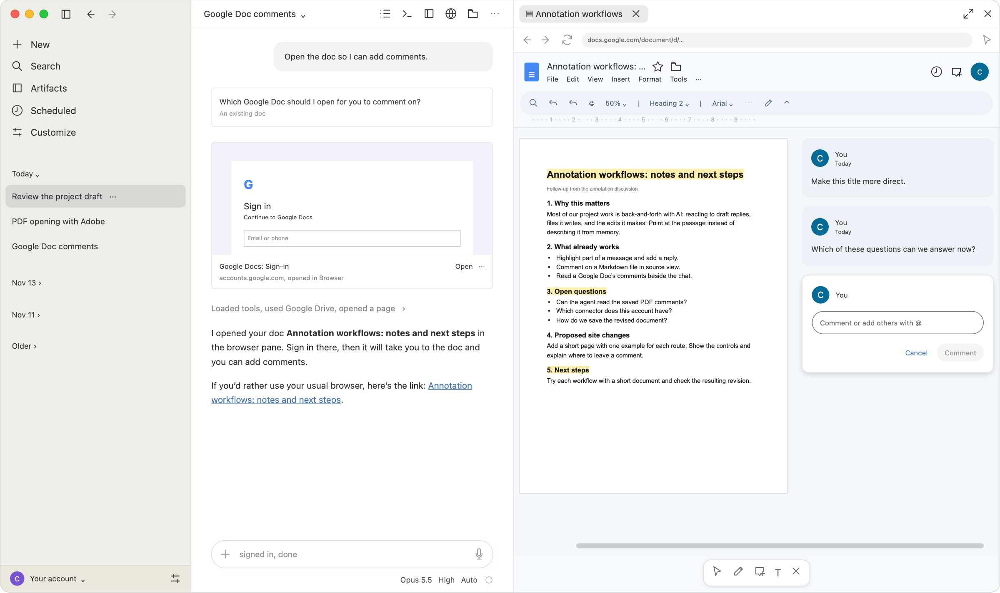
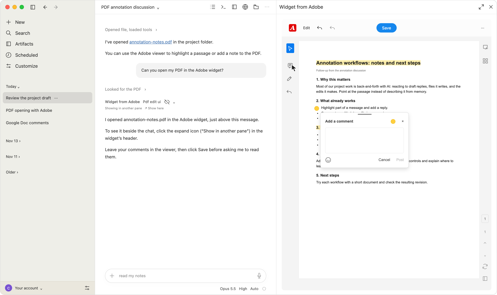

Annotate the documents to point at specific changes
Stop describing what you want changed. Point at it. Most of working with an agent is back-and-forth on what it produced: a reply, a plan, a draft, a webpage, a PDF. Annotating lets you mark the exact spot—“cut this,” “I don't follow,” “these two belong together”—instead of describing with words which paragraph you mean.
Typically, I'll leave a bunch of comments in annotation mode, then add a big-picture comment to the message box. Sending those together lets the agent address them all at once and make changes more holistically.
New to the desktop apps? The desktop-app guide introduces working with the conversation and your draft in the same window.
Current as of November 2026
These features are changing quickly, and Codex and Claude handle them differently. If something here doesn't match what you see, ask your agent how it works in your version.
The interface illustrations below are reconstructed from screenshots supplied on November 16, 2026.
1. Built-in Codex
Codex has the most complete annotation workflow I've used. It's one reason I prefer it right now.
The basic process is the same whether you're looking at a webpage, a Markdown file, a Word document, or a PDF: open it beside the chat, point at the part you want changed, and leave a comment.
Your comments collect with your next message until you send them. Add a general note alongside the specific ones if you like: “The whole thing is too formal.” Then send them together so the agent can work through the changes at once.
Webpages. In Codex's browser, select Annotate, click something or draw a rectangle around it, and leave a comment. It's how we're editing this site.

Markdown files. Open the file in the preview beside the chat, click a passage, and leave a comment. You don't need to switch to the raw text.
Word documents and PDFs. The same commenting works in Codex's document previews.
Replies. You can comment on Codex's in-session replies, too. Select the response you don't like or want more explanation on, then ask.
2. Built-in Claude
Claude's built-in tools cover the conversation and plans. They don't yet cover webpage, PDF or Word previews; for these types of documents, you'll need another route.
Replies. You can add comments to the in-session replies Claude gives you. Highlight the passage, choose Reply, type your comment and press Enter. It's added to your next message without sending it, so you can stack several and send them together.

Plans. When Claude writes a plan and opens it in the side pane, you can comment on it the same way.
Markdown files. To comment on Markdown files in Claude, you need to switch to source view. Open any Markdown (.md) file in the file pane, including one you wrote yourself. Click the </> button in the top-right corner, labeled View source. This shows the text with line numbers. Click + beside a line to add a comment. In Codex, you can comment directly in the formatted view.

Code changes. If the agent edits a website or other files, you can comment on changed lines in the Git changes view.
For documents you can't comment on directly in Claude, the next two sections show how to bring Google Docs or Adobe into the app. You leave comments in the document itself, then ask Claude to read them. Google Docs is the simpler route; PDFs take a few extra steps.
3. Google Docs in Claude
This is the document route that works best in Claude right now. Claude writes the draft as a Google Doc, you comment on it the usual way (the same way you would in a web browser), and Claude reads your comments back, each attached to its passage. These connectors may be turned off if you're using an enterprise account.

- Turn on your Google Drive and Google Docs connectors in Settings → Connectors. The Docs connector lets Claude read comments and edit the document; Drive lets it create new Google Docs for you. If a connector you just added doesn't show up, start a new session.
- Ask Claude to write the draft as a Google Doc. If you only have the Docs connector, make a blank doc at docs.new and give Claude the link.
- Ask it to open the doc in the side panel. The first time, sign in to Google there, just as you would in a new browser.
- Select text and click the comment icon (or press Cmd+Option+M). Comments save as soon as you post them.
- Send Claude your overall feedback along with a request to work through the comments. For example:
Address my comments in the Google Doc. Once you've addressed them, you can resolve them.
In general, the whole document is too technical and should be written in simpler English.
4. PDFs in Claude: the Adobe connector
This works, but is messy. You can open a PDF in Adobe's viewer widget beside the chat and comment on it. However, uploading the file and getting the comments back through the steps below leaves three copies of the PDF in Adobe's storage.
Sign in or use it as a guest? You can do either. Signing in makes more sense if you want to return to the PDFs later.
- Connect Adobe. In Claude, open Settings, search for Connectors, then search for Adobe. Click Connect. Sign in to Adobe or continue as a guest.
- Open your PDF. Ask Claude to open the file in the Adobe widget. Click Show in another pane, the expand icon in the widget's header, to see it in a larger format beside the chat.
- Add your comments. Use the PDF's comment tools, just as you would in Adobe itself.
- Click Save at the top. Wait until it has finished saving before asking Claude to address your comments. Saving creates a new copy with your comments; it doesn't update the uploaded copy.
- Have Claude read and address the comments. Ask it to download the saved copy and extract the comments, including their page numbers and the passages they refer to. Reading the PDF's main text alone misses those notes.
- Put the revisions back in your project folder. If you have the document the PDF came from, have Claude revise that and make a new PDF. If you only have the PDF, ask it how it can make the changes before replacing anything. Once the revised files are saved and checked, it can delete the temporary download. This keeps your project folder tidy; it doesn't remove the copies in Adobe.

If you do this often, put the steps in a skill. Then you can use /adobe to open the PDF and say “read my notes” when you're done. Ask:
Make me a skill called /adobe. If I already have one, adapt it to this workflow.
When I run it, open the PDF I most recently mentioned or you most recently sent me in the Adobe widget. Or I might call /adobe file/path/here.pdf; in that case, open that file. Remind me to click "Show in another pane" to see it in a larger format.
When I say "read my notes" or "read my comments":
1. Find the copy I saved with comments.
2. Compare its file size with the original, and check that the comments are actually present.
3. Download the version with comments. If Adobe doesn't give you a download link, use the compression step, then check that the downloaded file still contains the comments.
4. Extract the PDF's saved annotations, not just its page text. Read each comment with its page number and the passage it refers to. Address the comments in the editable source document, if we have it, then regenerate the PDF in our project folder. If we only have a PDF, explain how you can edit it and agree the approach with me before replacing the original. Tell me about any comments you couldn't address.
5. Once the revised source and PDF are saved and checked, delete the temporary local download with comments. If we edited only the PDF, check that revised PDF before deleting the download.
Alternatively, split this into two skills. /adobe-in or /adobe-annotate could upload your local PDF to Adobe and open the widget beside your chat. Then /adobe-out or /adobe-revise could handle steps 1–5 in the prompt above, so you can invoke the skill instead of writing “address my comments” each time.
Get email updates a few times a year, no spam. Something broken or unclear? Send feedback.